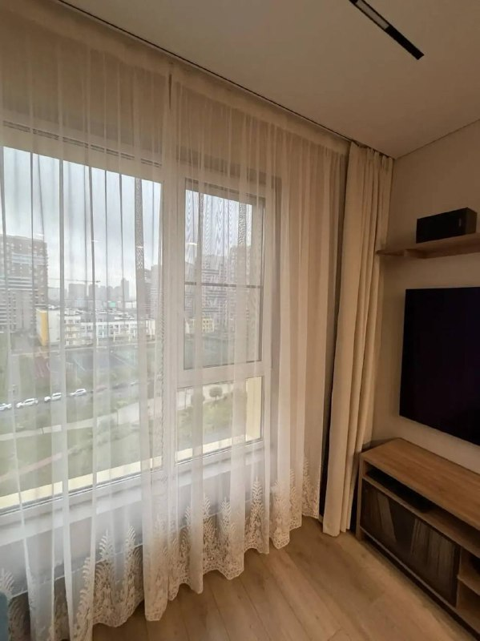
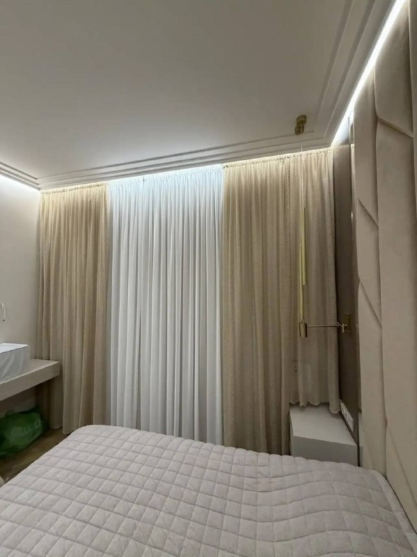
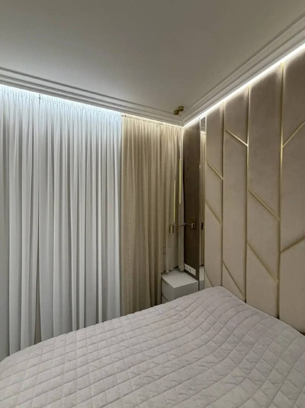
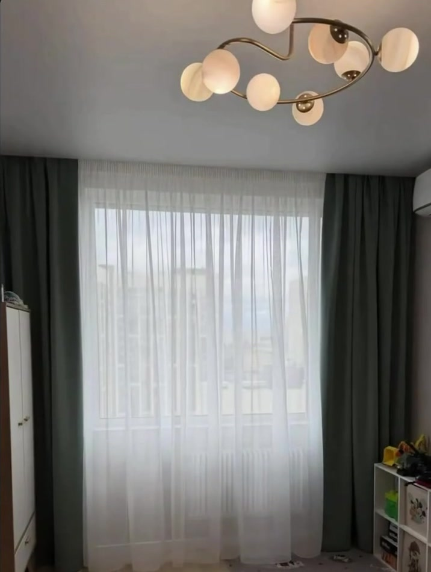
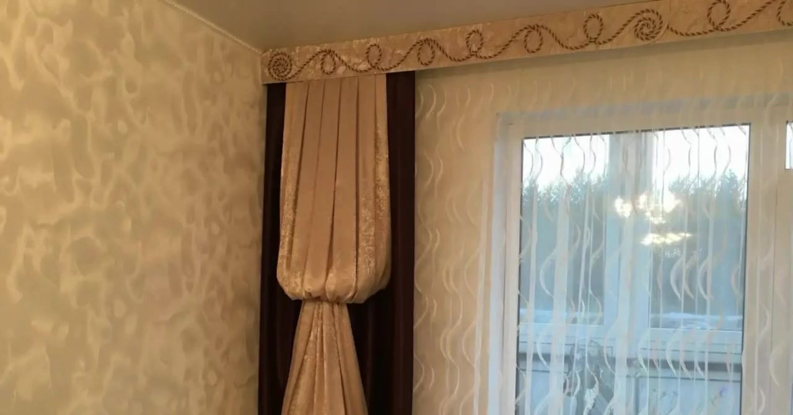
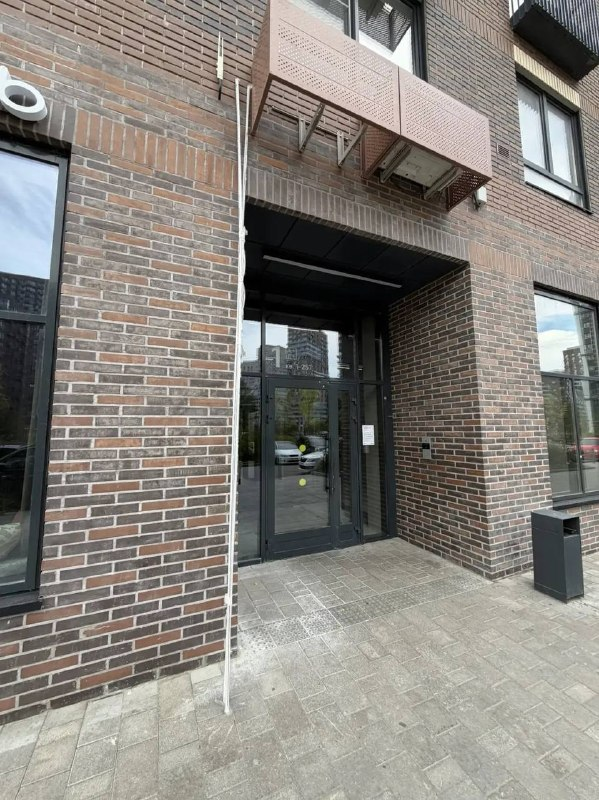

Тюль с рисунком
в гостиной
На просвет виден растительный рисунок по нижнему краю. Однотонные портьеры обрамляют широкое окно со стороны ТВ-зоны.
Смотреть гостиную ↗

Тюль проходит по всей стене и закрывает границы оконного проёма.
Текстильное ателье · Москва
Подберём ткань у вас дома, снимем размеры, сошьём и повесим шторы.
Отправить фото окнаДля портьер выбрали оттенок стеновых панелей. На боковом ракурсе видно, как сходятся ткань, стена и изголовье.
Посмотреть спальню целиком
На просвет виден растительный рисунок по нижнему краю. Однотонные портьеры обрамляют широкое окно со стороны ТВ-зоны.
Смотреть гостиную ↗
В детской два слоя. Вуаль рассеивает свет днём, плотные портьеры блэкаут помогают затемнить комнату на время сна.
Смотреть детскую ↗
Ручная вышивка на ламбрекене и светлые драпировки на фоне шоколадной ткани. Готовый комплект отправили заказчице.
Смотреть проект ↗Покажем образцы у вашего окна, подберём ткань и складку, снимем размеры. По желанию сошьём покрывало и подушки в той же гамме.
Подберём крепление и степень затемнения для конкретного окна.
Подбираем и устанавливаем настенные, потолочные и электрические карнизы. Развешиваем и отпариваем шторы.
Можно обсудить снятие штор, чистку и повторную развеску. Подгоняем длину готовых штор.
Пришлите фото окна и примерные размеры. В смете учитываем ткань, пошив, карниз и монтаж. Согласуем состав работ перед пошивом.
Фото окна замер и ткани смета и пошив монтаж
Для расчёта пришлите фото окна целиком. Захватите верх стены, чтобы было видно, где можно закрепить карниз.
Написать Татьяне в Telegram +7 926 196-57-57